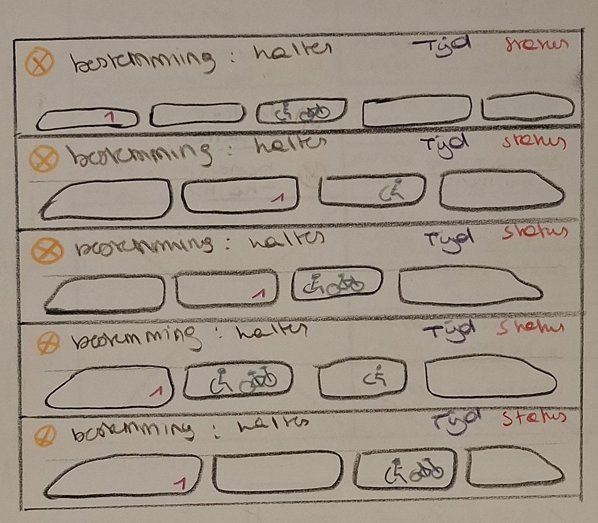

Week 3

Deze week richtte ik me op kleurgebruik. Door kleuren toe te voegen, kon ik informatie beter structureren en het geheel overzichtelijker maken. De basislay-out bleef grotendeels hetzelfde, maar bij het wagonscherm voegde ik ook iconen toe om de verschillende wagons beter herkenbaar te maken.
Ik merkte dat kleine visuele aanpassingen een groot verschil konden maken in duidelijkheid en gebruiksvriendelijkheid.